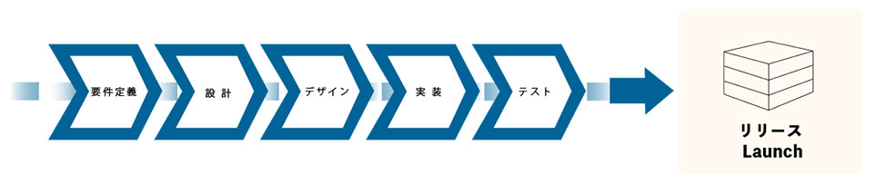
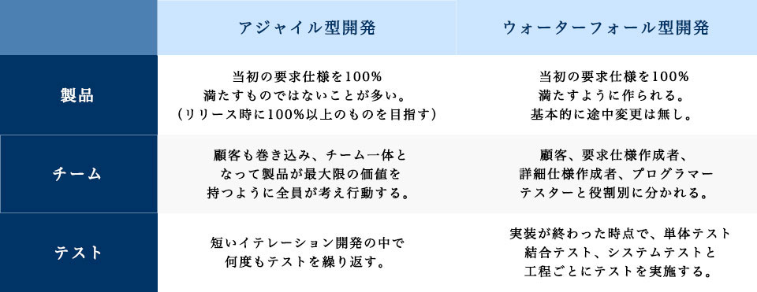

SERVICE
アジャイル開発アジャイル開発とは
「アジャイル開発」は現在主流になっている、システムやソフトウェアの開発手法の１つで、
『要件定義→設計→開発→実装→テスト→運用』といった開発工程を機能単位の
小さいサイクルで繰り返すのが最大の特徴。
反復ごとに開発・提供を行うアジャイル開発、より速いスピードでお客様にプロダクトや新機能を提供することが可能です。
お客様のリアルな声を製品に反映しながら開発できることは、開発側にもユーザー側にもメリットがあるでしょう。
顧客も巻き込んで、チーム一体となり製品がベストのパフォーマンスを持つように全員で考える。
セカンドウェーブは柔軟にお客様にコミットいたします。
アジャイル開発
小規模ウォーターフォール手法を何度も繰り返しながら、商品の機能を拡張していく。
お客様との密な意見交換で最上級の製品を開発する。
ウォーターフォール開発
全行程が完了して初めて出荷可能な製品となる。
 